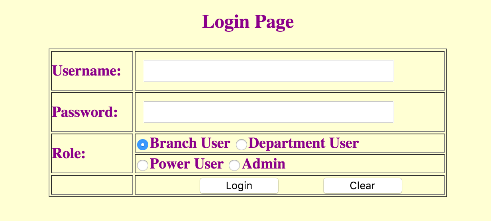

MVC Examples
Below are Model-View-Controller (MVC) examples
using different technologies.
Here are some links on MVC design pattern:
The use case is "Log into The System". Here are the steps regarding
how the use case is implemented:
- First a login form, shown at the right, is displayed.
- Then form is filled out and submitted into the controller
by you.
- The controller delegates the flow along with login info
to a service object.
- Service object decides whether the submitted information
is correct in order to let the user log into the system.
- Depending on the information returning from the service
the controller chooses one of the four views, i.e. welcome pages,
one for each role, to be displayed.
- The controller dispatches the flow to the chosen view.
- The chosen view displays the user information.
|
 |
To see the source code please make sure that web init parameters in org.javaturk.wap.util.SourceCodeServlet
are set correctly:
package org.javaturk.wap.util;
...
@WebServlet(urlPatterns = { "/SourceCodeServlet" }, initParams = {
@WebInitParam(name = "srcDir", value = "/Users/akin/Documents/Java/- Eclipse/Eclipse Mars/workspace/WEB WS/WAP MVC/src"),
@WebInitParam(name = "jspDir", value = "/Users/akin/Documents/Java/- Eclipse/Eclipse Mars/workspace/WEB WS/WAP MVC/WebContent/jsp"),
@WebInitParam(name = "jsfDir", value = "/Users/akin/Documents/Java/- Eclipse/Eclipse Mars/workspace/WEB WS/WAP MVC/WebContent/jsf"),
@WebInitParam(name = "web.xml", value = "/Users/akin/Documents/Java/- Eclipse/Eclipse Mars/workspace/WEB WS/WAP MVC/WebContent/WEB-INF/web.xml") })
public class SourceCodeServlet extends HttpServlet {
...
}
Here are the source code of some common classes & web.xml used
in these example.
All-Servlet MVC Implementation
In this example all views and controllers implemented as servlets.
- Login Form
The form is implemented in a servlet.
- LoginController
The controller servlet uses LoginService to authenticate the user and
then uses
RequestDispatcher to dispatch requests to
chosen view, which is also a servlet. LoginController
extends AbstractController
Model-1 (Page-centric) MVC Implementation
This implementation is based on
Model-1 architecture. Model-1 takes all-JSP
approach to web architecture. So views and controllers are all JSPs.
- Login Form
The entrance point to the Login application is a JSP. JSP page
submits the form to the controller, which is another JSP.
- LoginControllerJSP
The controller, actually a JSP, used for this example. It uses
LoginBean to reach LoginService authenticate the user and then uses
<jsp:forward>
tag to dispatch requests to chosen view, which is another JSP.
- LoginBean
Bean class used in this example.
Model-2 (Servlet-centric) MVC Implementation
This implementation is based on
Model-2 architecture. Model-2 utilizes servlets as
controllers and JSPs as views. For difference between
Model-1 and
Model-2 architectures please have a look at
here and
here.
- Login Form The entrance point
to the Login application is a JSP. JSP page
submits the form to the controller, which is a servlet.
- LoginController
The controller servlet used for this example. It uses
LoginService
to authenticate the user and then uses RequestDispatcher
to dispatch requests to chosen view, which is a JSP. LoginController
extends AbstractController
JSF MVC Implementation
In this example all views are implemented as JSF pages and the
controller is JSF's front configured & thus transparent controller.
- Login Form The entrance point
to the Login application is a JSF page. JSF
page submits the form to itself through the front controller which
binds controls in the JSF page to a managed bean,
LoginBean
, referred in the page.
- LoginBean
Managed bean used for this example.
Spring MVC Implementation
In this example all views are implemented as JSP pages and the
controller is Spring's controller.
- Login Form The entrance
point to the Login application is a JSP. JSP page
submits the form to the controller, which is a Spring controller.
- SpringLoginController
Spring's controller class used for this example.